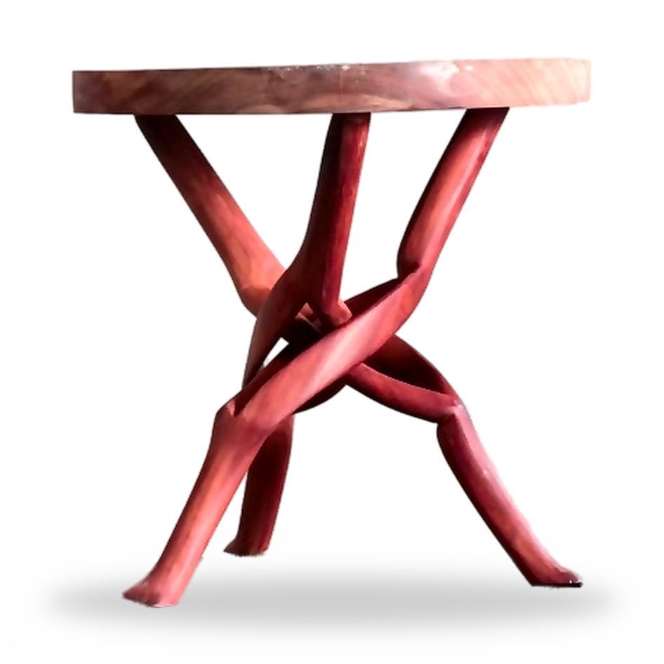
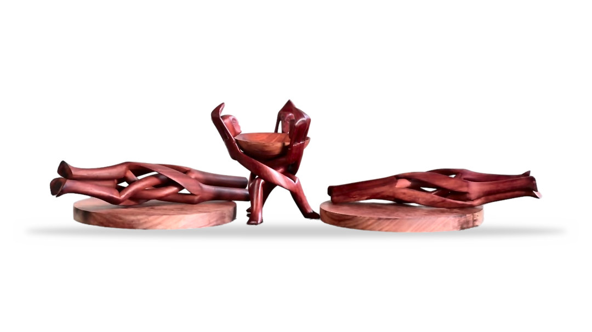
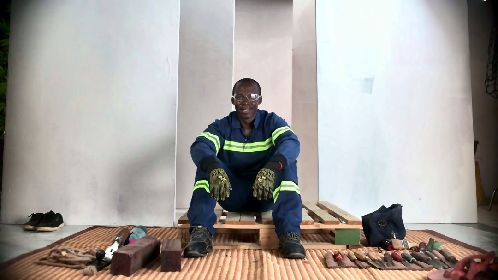
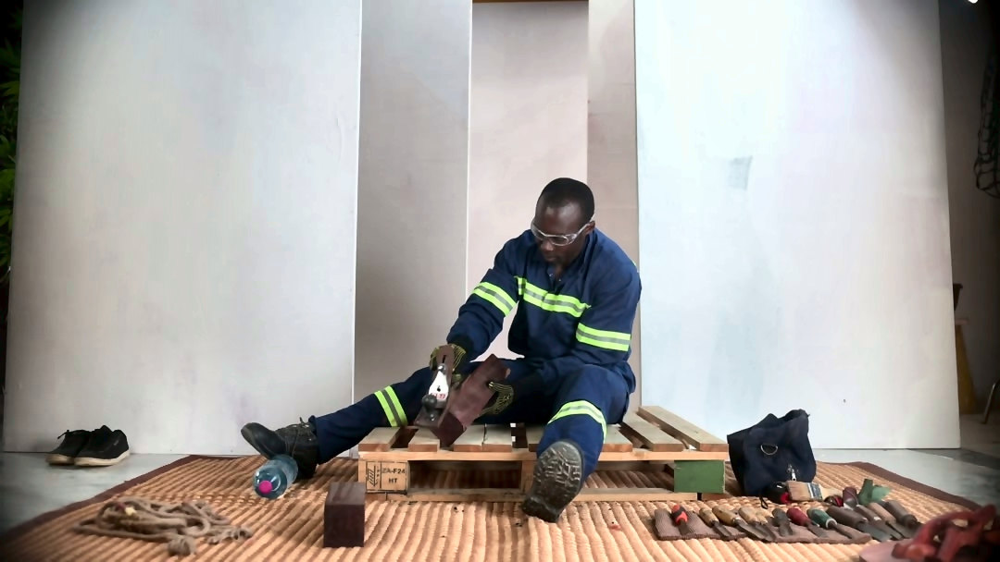

Enhanced, upscaled and exported for web. WebP first with a JPEG fallback — paste the markup under each image straight into your page. Product shots are cut out on white and also supplied as transparent PNGs.

alt: “Hand-carved padauk stool with interlaced branch legs”
946×946 · 720×720 · 480×480
946: 62KB jpg / 19KB webp · 720: 42KB jpg / 13KB webp · 480: 24KB jpg / 8KB webp
<picture>
<source type="image/webp" srcset="product/padauk-stool-480.webp 480w, product/padauk-stool-720.webp 720w, product/padauk-stool-946.webp 946w" sizes="(max-width: 800px) 100vw, 800px">
<img src="product/padauk-stool-946.jpg" srcset="product/padauk-stool-480.jpg 480w, product/padauk-stool-720.jpg 720w, product/padauk-stool-946.jpg 946w"
sizes="(max-width: 800px) 100vw, 800px"
width="946" height="946" loading="lazy" decoding="async"
alt="Hand-carved padauk stool with interlaced branch legs">
</picture>

alt: “Carved padauk sculptural pieces and bowl on turned wooden bases”
2564×1442 · 2160×1215 · 1440×810 · 1080×607 · 720×405 · 480×270
2564: 150KB jpg / 45KB webp · 2160: 113KB jpg / 35KB webp · 1440: 62KB jpg / 21KB webp · 1080: 41KB jpg / 15KB webp · 720: 23KB jpg / 9KB webp · 480: 13KB jpg / 5KB webp
<picture>
<source type="image/webp" srcset="product/carved-collection-480.webp 480w, product/carved-collection-720.webp 720w, product/carved-collection-1080.webp 1080w, product/carved-collection-1440.webp 1440w, product/carved-collection-2160.webp 2160w, product/carved-collection-2564.webp 2564w" sizes="(max-width: 800px) 100vw, 800px">
<img src="product/carved-collection-1080.jpg" srcset="product/carved-collection-480.jpg 480w, product/carved-collection-720.jpg 720w, product/carved-collection-1080.jpg 1080w, product/carved-collection-1440.jpg 1440w, product/carved-collection-2160.jpg 2160w, product/carved-collection-2564.jpg 2564w"
sizes="(max-width: 800px) 100vw, 800px"
width="2564" height="1442" loading="lazy" decoding="async"
alt="Carved padauk sculptural pieces and bowl on turned wooden bases">
</picture>

alt: “Furniture maker seated in the workshop with his hand tools laid out”
2160×1216 · 1440×811 · 1080×608 · 720×405 · 480×270
2160: 278KB jpg / 92KB webp · 1440: 151KB jpg / 55KB webp · 1080: 94KB jpg / 40KB webp · 720: 53KB jpg / 23KB webp · 480: 28KB jpg / 13KB webp
<picture>
<source type="image/webp" srcset="lifestyle/craftsman-portrait-480.webp 480w, lifestyle/craftsman-portrait-720.webp 720w, lifestyle/craftsman-portrait-1080.webp 1080w, lifestyle/craftsman-portrait-1440.webp 1440w, lifestyle/craftsman-portrait-2160.webp 2160w" sizes="(max-width: 800px) 100vw, 800px">
<img src="lifestyle/craftsman-portrait-1080.jpg" srcset="lifestyle/craftsman-portrait-480.jpg 480w, lifestyle/craftsman-portrait-720.jpg 720w, lifestyle/craftsman-portrait-1080.jpg 1080w, lifestyle/craftsman-portrait-1440.jpg 1440w, lifestyle/craftsman-portrait-2160.jpg 2160w"
sizes="(max-width: 800px) 100vw, 800px"
width="2160" height="1216" loading="lazy" decoding="async"
alt="Furniture maker seated in the workshop with his hand tools laid out">
</picture>

alt: “Furniture maker planing a padauk board by hand in the workshop”
2160×1216 · 1440×811 · 1080×608 · 720×405 · 480×270
2160: 278KB jpg / 90KB webp · 1440: 152KB jpg / 54KB webp · 1080: 95KB jpg / 39KB webp · 720: 54KB jpg / 24KB webp · 480: 28KB jpg / 13KB webp
<picture>
<source type="image/webp" srcset="lifestyle/craftsman-at-work-480.webp 480w, lifestyle/craftsman-at-work-720.webp 720w, lifestyle/craftsman-at-work-1080.webp 1080w, lifestyle/craftsman-at-work-1440.webp 1440w, lifestyle/craftsman-at-work-2160.webp 2160w" sizes="(max-width: 800px) 100vw, 800px">
<img src="lifestyle/craftsman-at-work-1080.jpg" srcset="lifestyle/craftsman-at-work-480.jpg 480w, lifestyle/craftsman-at-work-720.jpg 720w, lifestyle/craftsman-at-work-1080.jpg 1080w, lifestyle/craftsman-at-work-1440.jpg 1440w, lifestyle/craftsman-at-work-2160.jpg 2160w"
sizes="(max-width: 800px) 100vw, 800px"
width="2160" height="1216" loading="lazy" decoding="async"
alt="Furniture maker planing a padauk board by hand in the workshop">
</picture>